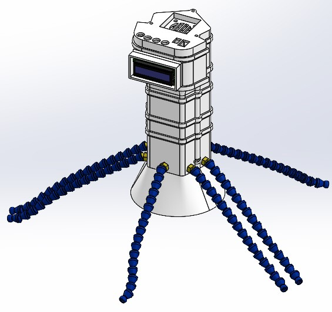
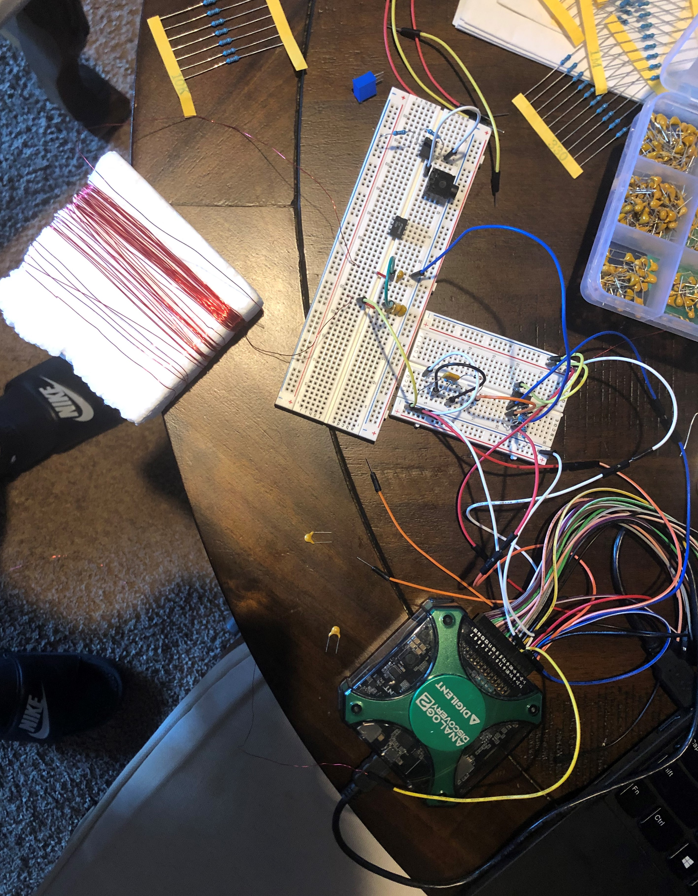

Hi, my name is Selim Emir Can! I am a Senior studying electrical engineering at UCLA. I am passionate about computer vision and computational imaging.
I've previously conducted research at the RoMeLa Lab. I am currently conducting research with the Visual Machines Group.
Eye Tracking Research
Synthetic
Data Generation

I created an anatomically accurate eye model that can be varied in eyeball size, corneal shape, corneal thickness, and iris size in Blender 3.6. Combined with a dense 3D head scan of 10 subjects, images of this eye model are rendered from different perspectives under different lighting conditions.
Robotics Research
Modular
Gas Sensor Shell

I designed a gas sensor shell to 1) store an array of sensors oriented correctly relative to the gas flow 2) have enough space to
accomadate wiring, a PCB and a headless Raspberry Pi 3) be modular to add/remove sensors if needed.
Robotics Research
2 in 1 Spatula

I designed a spatula to 1) hold and/or flip food by clamping it between two surfaces 2) act as a scraper spatula or a flipper
spatula depending on use 3) control it using servos and an Arduino for any cooking process.
Class Project
Path Following Car
I used sensor fusion and PID control to program a path following car.
Class Project
AM Radio Reciever

Learned the fundamentials of Amplitude Modulation and created an AM Radio Reciever using basic circuits knowledge.
Course Work
- Computer Vision
- Digital Signal Processing
- Systems and Signals
- Neural Signal Processing and Machine Learning
- Computer Organization
- Data Structures & Algorithms
- Engineering Electromagnetics
- Probability and Statistics
- Principles of Feedback Control
- Logic Design of Digital Systems
- Circuit Theory (Honors)
Skills
- 3-D Modelling (Solidworks)
- Rapid Prototyping (Laser cutting, 3-D printing)
- C/C++, MATLAB, Python
- Adobe Creative Cloud, Microsoft Office